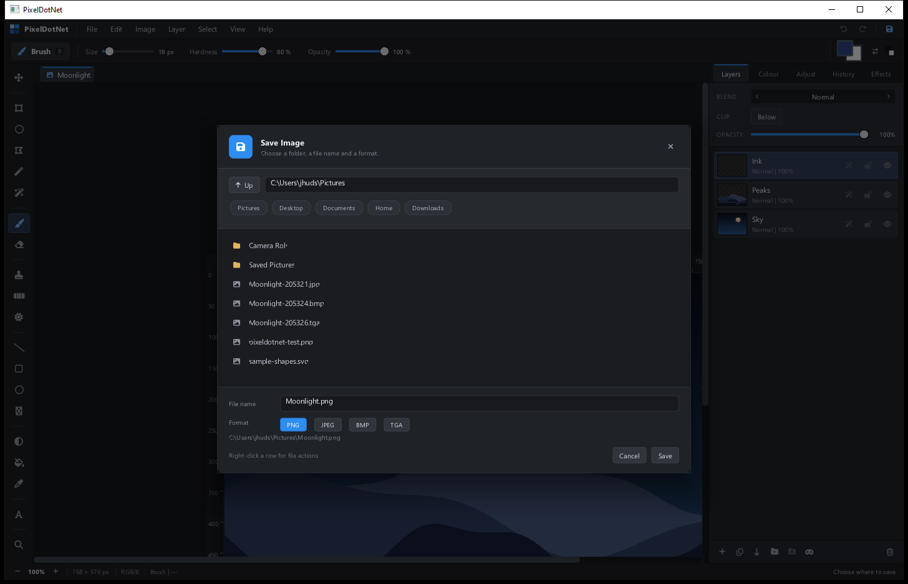

PixelDotNet User Guide
A friendly, step by step guide to the PixelDotNet raster editor. Learn the screen, paint your first image, make selections, work with layers, and save or export your work.
This guide is written in plain language. You do not need to know anything about pixels, layers, or file formats before you start. Every feature is explained simply, and the main tools and windows are shown in screenshots.

What PixelDotNet is
PixelDotNet is a painting and photo editing program. It works with raster images, which simply means pictures made of tiny coloured squares called pixels. You can paint with a brush, erase, draw shapes, add text, cut things out, adjust colours, apply effects, and save the result as an image or as a layered project.
The program is built around a few simple ideas:
Layers are sheets of glass
Each layer holds part of the picture. Layers stack on top of each other. You can hide one, fade it, move it, or paint on just that sheet without touching the rest.
Selections are stencils
A selection limits where your next edit can happen. If you select a circle, painting and effects only change pixels inside that circle.
Tools do one job
The left rail holds every tool. Pick one, look at the options bar across the top, and use the canvas. The options change to match the tool.
Free forever. Private by design.
PixelDotNet is free to use, and it will stay free. There is no paid version, no subscription, no account to create, no ads, and no telemetry. The program does not collect information about you or send usage data anywhere.
Free forever
Every feature in this guide is included. There is nothing to unlock and nothing to buy later.
No telemetry or tracking
PixelDotNet does not record what you do, does not phone home, and does not include analytics or tracking code.
Your files stay yours
Your images are opened, edited, and saved on your own computer. Nothing is uploaded to a cloud service.
The only time PixelDotNet goes online is when you choose to add a font from cdnfonts. That is optional and only happens when you press Add.
Starting the app
If you are running PixelDotNet from the project folder, open a terminal in that folder and run:
dotnet run
If you already have a built copy, start PixelDotNet.exe instead. The app opens with the Moonlight sample image so you have something to explore immediately.
A tour of the screen
The window has six main areas. Once you know these, everything else is just choosing a tool and changing its options.
1. The menu bar
Across the top you will find File, Edit, Image, Layer, Select, View, and Help. These menus hold commands that are not tied to a single tool, such as opening files, resizing the image, adding layers, or turning on tooltips.
2. The options bar
The row under the menu bar belongs to the active tool. With the brush selected you will see size, hardness, and opacity. With the text tool selected you will see the font, size, alignment, and colour controls. Always glance here after picking a tool.
3. The tool rail
The narrow strip on the left holds all the tools. Hover over an icon to see its name. Most tools also have a single letter shortcut, such as B for the brush or E for the eraser.
4. The canvas
The canvas is your picture. The checkerboard pattern behind it means transparency. A transparent area has no pixels at all, not white pixels. You can zoom with Ctrl and the mouse wheel, and pan by holding the space bar or the middle mouse button while dragging.
5. The side panel
The right side has five tabs: Layers, Colour, Adjust, History, and Effects. The Layers tab is the one you will use most. The other tabs are for colour picking, tone changes, undo history, and filters.
6. The status bar
The bottom edge shows the current zoom level, document size, colour under the pointer, the active tool, and a short message telling you what just happened. If an action does not seem to work, read the message here first.

Your first painting
Let us make a simple drawing on top of the sample. This uses a new layer so the original picture stays safe.
- Add a layer. Choose Layer > New Layer or press Ctrl+Shift+N. A new empty layer appears at the top of the Layers panel.
- Pick the brush. Press B or click the brush icon in the tool rail.
- Choose a colour. Click the foreground colour swatch near the top right, or open the Colour tab on the right and pick a colour from the spectrum.
- Set the brush size. Drag the Size slider in the options bar, or press [ and ] to change it while painting.
- Paint. Drag on the canvas. The stroke appears on the new layer. If you make a mistake, press Ctrl+Z to undo.
- Soften the edge. Lower Hardness for a soft airbrush look. Lower Opacity to build colour slowly instead of covering everything at once.
Using the brush like a pro
- [ makes the brush smaller and ] makes it larger.
- Hold Alt and scroll over the canvas to change the brush size without leaving the picture.
- Hold Ctrl and scroll to zoom in and out.
- A soft brush at low opacity is excellent for shading. A hard brush at full opacity is better for clean edges and pixel art.
- The brush ring on screen shows the exact size of the brush before you paint.
Saving your first image
There are two different ways to save, and they are both useful.
Save a normal image
Choose File > Save... or press Ctrl+S. The in-app file browser opens. Pick a folder, type a name, choose PNG, JPEG, BMP, or TGA, and press the save button. PNG is the best default because it keeps transparency and crisp pixel edges.
Save a layered project
Choose File > Save Project.... This writes a .pxd file. A project keeps every layer, mask, group, guide, layer style, smart object, shape, and text layer so you can reopen it later and keep editing. A PNG or JPEG flattens everything into one picture.

Tooltips and the Help menu
Tooltips start disabled so the interface stays quiet while you work. Choose Help > Enable Tooltips to turn them on. When they are on, hovering a tool or button shows its name, and some controls show a small chevron. Click the chevron to open a help card with more detail.
Even with tooltips disabled, the tool rail still shows the name of each tool when you hover it. That way you can always identify an icon without turning on the full help system. Choose Help > Disable Tooltips when you know your way around.
Where to find each feature
| I want to... | Go to | Read more |
|---|---|---|
| Paint, erase, clone, or heal | Tool rail and options bar | Tools |
| Cut out a subject or protect part of the image | Selection tools, Select menu | Selections |
| Move, hide, group, mask, or style a layer | Layers panel, Layer menu | Layers |
| Draw an editable shape, path, or text | Shape tools, Pen tool, Text tool, Layers panel | Shapes, paths and text |
| Change brightness, colours, or apply a filter | Adjust and Effects tabs, Image menu | Adjustments |
| Open, save, batch convert, or use SVG | File menu | Files |
| Learn a keyboard shortcut | Anywhere | Shortcuts |
Words you will see
| Word | Plain meaning |
|---|---|
| Pixel | One tiny coloured square in a picture. A 768 by 576 image has 442,368 pixels. |
| Raster | A picture made of a fixed grid of pixels. Painting and photo editing usually work on raster images. |
| Vector | Artwork described by shapes and lines rather than a fixed grid. It stays sharp when scaled. |
| Layer | One sheet in the stack that makes up the picture. Each layer can be edited on its own. |
| Selection | A stencil that limits where the next edit can happen. |
| Mask | A black and white image attached to a layer that hides or reveals parts of it. |
| Opacity | How see-through something is. 100 percent is solid. 0 percent is invisible. |
| Blend mode | A rule for how a layer mixes with the layers below, such as Multiply or Screen. |
| Anchor | A point on a path. Dragging an anchor changes the path's shape. |
| Handle | A control point that bends the curve between two path anchors. |
| Anti-aliasing | Softening the edge of a shape so it does not look jagged. The brush does this automatically. |
| Alpha | The transparency channel. A pixel with low alpha is mostly see-through. |
| PXD | The PixelDotNet project file. It keeps layers and editable content. |
| SVG | A vector file format that can be opened in browsers and design programs. |
How to read this guide
Commands look like this: Layer > New Layer. That means open the Layer menu and choose New Layer. Keys look like this: Ctrl+Z. That means hold Ctrl and press Z.
Some sections use these boxes:
Ready to begin? Start with Tools, or jump straight to the area you need.